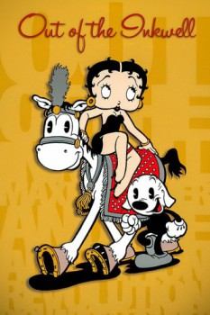

Out of the Inkwell: The Fleischer Story (2008)


Country:United States, 48 minutes
Spoken languages:English
Genres:Documentary
Director(s):
Writer(s):Mark Nassief
Video Codec:Unknown
Number: 243
IMDb Rating:

Certification:
Storyline:
A documentary about the Fleischer brothers and how they revolutionized animation.
Cast:
Carl Reiner (as Narrator), Jerry Beck (as Himself), Leslie Carbaga (as Himself), Harvey Deneroff (as Himself), Paul Dini (as Himself)
Medium: Media file,
Location: D:\Animation\Animation History\Out of the Inkwell The Fleischer Story.mp4
Loaned: No
Aspect ratio: Unknown